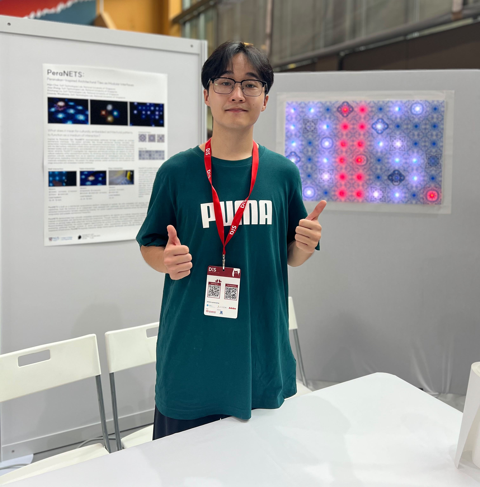
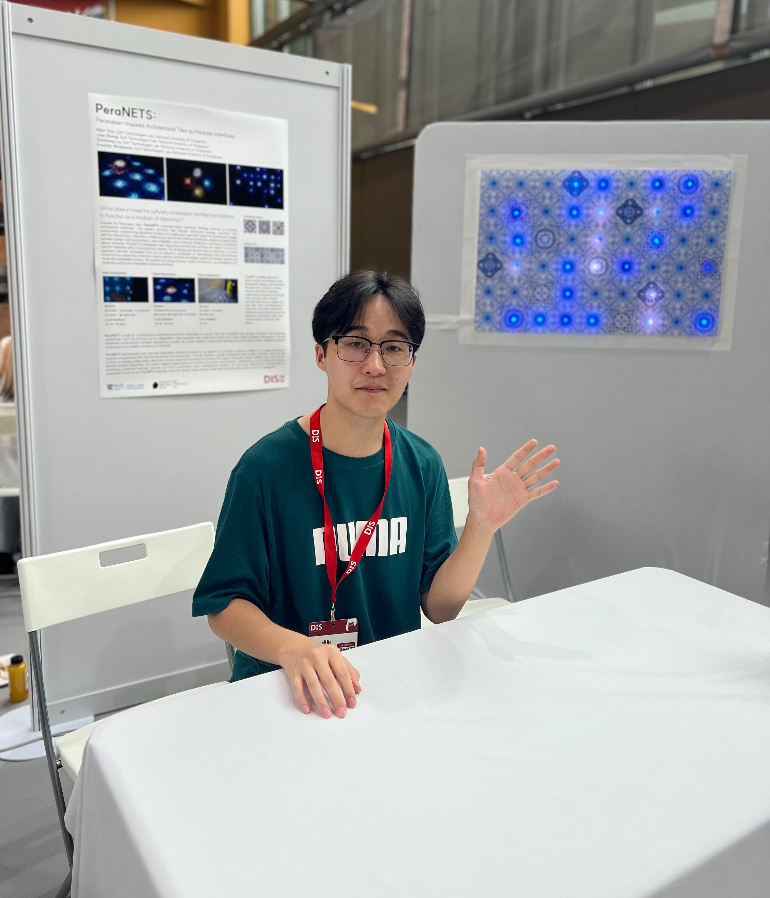

Hi, I'm Liu Xinchang, but you can call me Leo!
Available for full-time roles in Singapore from 1 January 2027
I'm a Product & Interaction Designer based in Singapore, exploring new forms of physical interaction through materials, computation, and fabrication.
I design and prototype interactive physical products — from sensors and electronics to materials and form — and take ideas from first sketch to working, tested prototypes.
I enjoy turning ideas into working prototypes, bringing together emerging materials, physical computing, and computational fabrication. My process often starts with a simple question, followed by hands-on experimentation, making, testing, and plenty of iteration.
Outside of design and research, I enjoy running 🏃 and playing the guitar 🎸. I'm always happy to connect, exchange ideas, and explore opportunities for future collaboration — whether it's about design, research, or anything beyond!


Featured Projects & Experience
Research Projects
Industry Experience


Publications
Interaction Design & HCI
About
Prototyping & fabrication — 3D printing, laser cutting, silicone moulding
3D modelling & rendering — Rhino, SolidWorks, Blender, KeyShot Interactive & XR — Unity, mixed reality, animation, game development
AI & ML — LLM API integration (OpenAI / local-model APIs), supervised ML training for gesture & playing-pattern classification
Design tools — Figma, Photoshop, Illustrator, InDesign, Premiere Pro
National University of Singapore — Research Master, Industrial Design
Soft Technology Lab, College of Design and Engineering · 2025 – 2027
Hunan University of Technology — B.Des. Product Design
2020 – 2024
Interned as a 3D Printing & Medical Visualization Intern at the 3DPP Lab, Duke-NUS Medical School / SingHealth; previously interned in interior design at Neta Auto and as a curator intern at China Textile Publishing House.